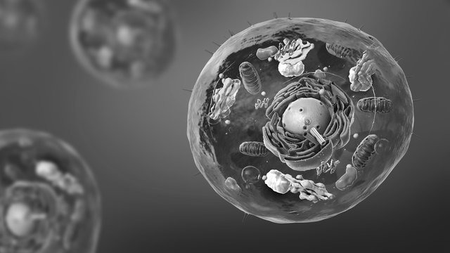

Realizari

George Palade a realizat importanța excepțională a microscopiei electronice
și a biochimiei în studiile de citologie.
Cel mai important element al cercetărilor lui Palade a fost explicația mecanismului celular al producției de proteine.
A pus în evidență particule intracitoplasmatice bogate în ARN, la nivelul cărora se realizează biosinteza proteinelor,
numite ribozomi sau corpusculii lui Palade.
În 1974 dr. Palade a primit Premiul Nobel pentru Fiziologie sau Medicină,
împreună cu Albert Claude și Christian de Duve pentru descoperiri privind organizarea funcțională a celulei.